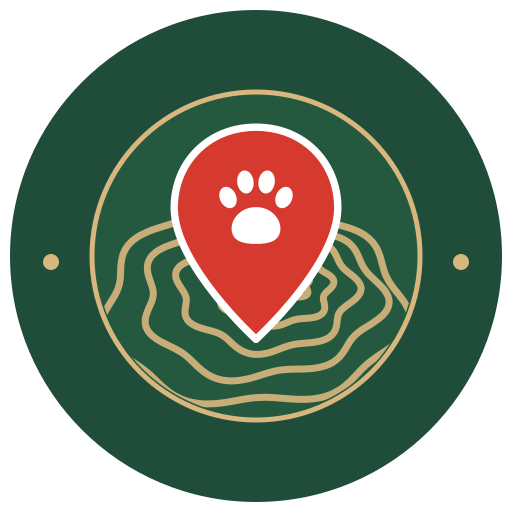

TopoRescue Maps · carta tecnica 1:5000 per GPS, CAD e GIS
TopoRescue Maps mette a disposizione, gratis per gli operatori del soccorso e della protezione civile, mappe topografiche molto dettagliate ricavate dalle carte tecniche regionali in scala 1:5000 (CTR, CTRN, DBT), dai modelli digitali del terreno e da OpenStreetMap: edifici, sentieri, strade, curve di livello, corsi d'acqua, elettrodotti, impianti a fune, nomi delle località e delle cime.
Sono pensate per la ricerca di persone disperse e per il lavoro delle squadre a terra, delle unità cinofile e del soccorso alpino: conoscere il terreno prima di entrare in zona, battere l'area assegnata con il GPS, riconsegnare le tracce come prova della copertura.
Italia: Friuli Venezia Giulia, Veneto, Trentino, Alto Adige, Valle d'Aosta, Piemonte, Lombardia, Liguria, Emilia-Romagna, Toscana, Marche, Umbria, Lazio, Abruzzo, Molise, Campania, Puglia, Basilicata, Calabria, Sicilia, Sardegna.
Paesi confinanti: Svizzera, Austria, Slovenia e i dipartimenti francesi di confine.
I dati vengono da fonti pubbliche: carte tecniche delle Regioni e degli Stati confinanti, modelli digitali del terreno, OpenStreetMap, con le rispettive licenze. Il terreno può essere cambiato: le mappe non sostituiscono la verifica sul posto né le indicazioni di chi coordina l'intervento.